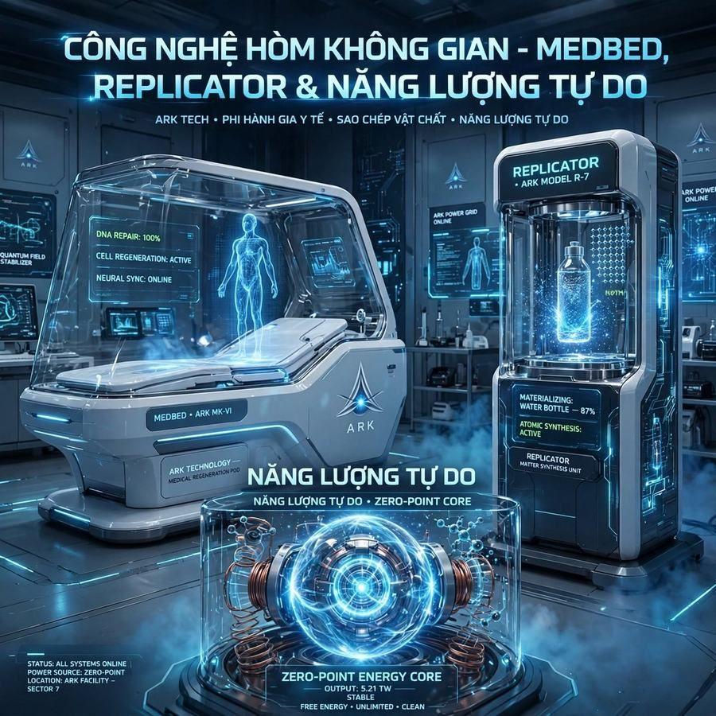
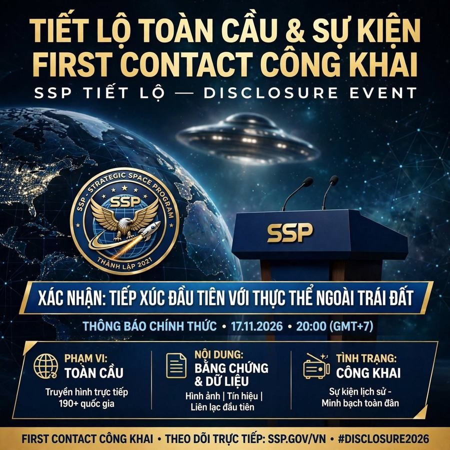
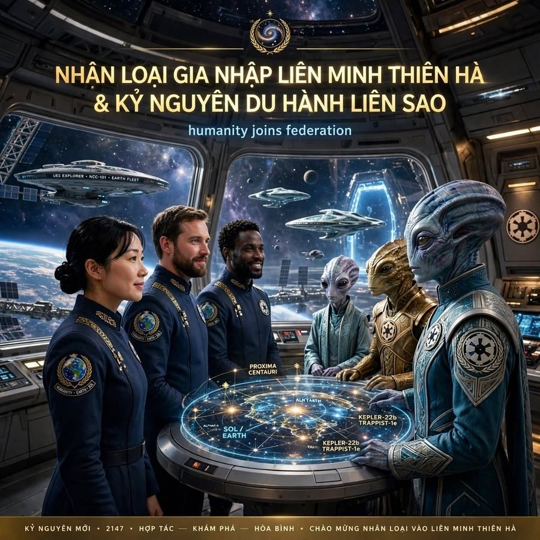
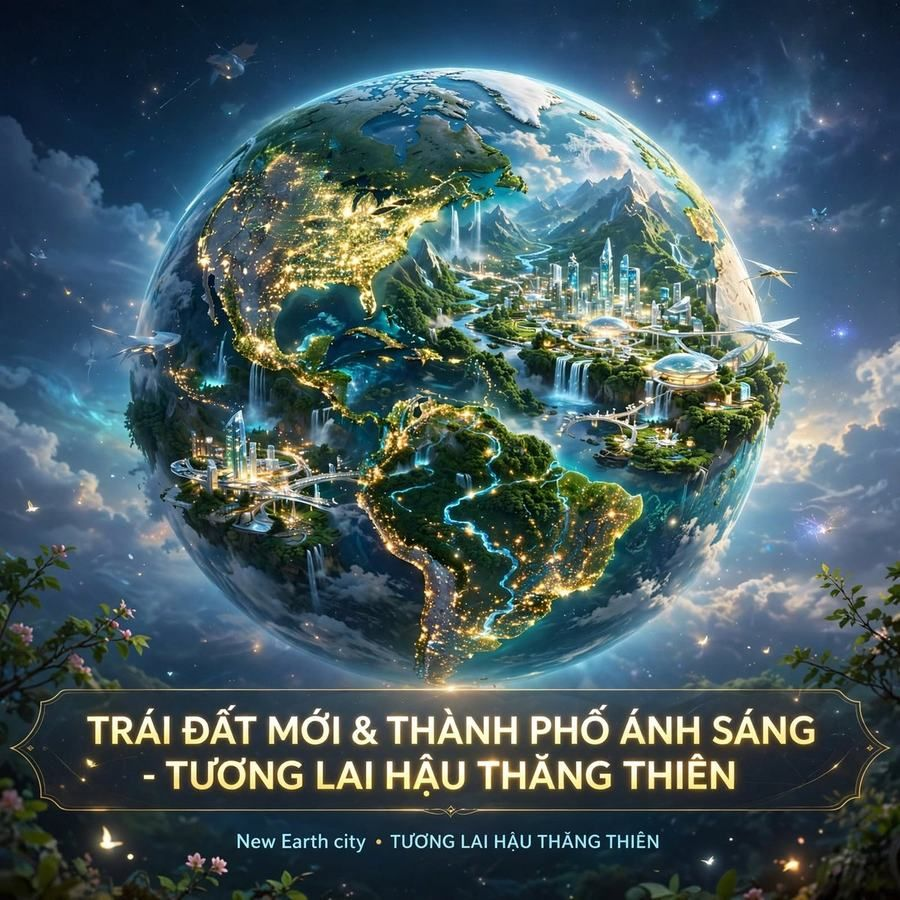
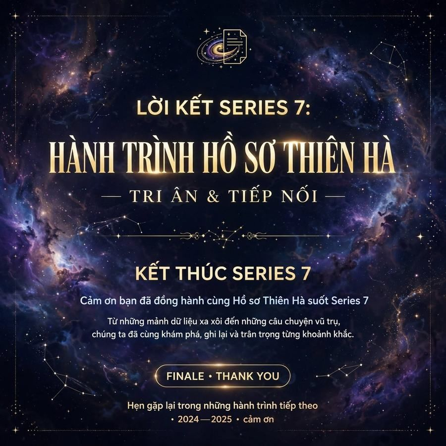

Trang chủ / Chuyên đề 6: Hòm Không Gian Cổ Đại / Kỳ 60
Chuyên đề 6 · Kỳ 60 / 100
KỶ NGUYÊN THĂNG HOA 5D & TƯƠNG LAI TRỞ THÀNH CƯ DÂN VŨ TRỤ CỦA NHÂN LOẠI TRÁI ĐẤT

Hành trình 10 kỳ của chuyên đề 6: Bí Ẩn Các Hòm Không Gian Cổ Đại (Space Arks) Thức Tỉnh đã chính thức chạm tới thời khắc khép lại tráng lệ nhất! Qua 9 kỳ vừa qua, chúng ta đã cùng nhau du hành qua hàng triệu năm lịch sử exopolitics: Bóc tách bản chất tinh thể hữu cơ của Space Arks và sự trở lại của hạm đội 24 chủng tộc Seeder tại Sao Mộc (Kỳ 1), thâm nhập chiếc Hòm Không Gian Đại Tây Dương dài 1,6 km cùng sứ mệnh JP (Kỳ 2), vỡ òa trước hiện tượng tỏa nhiệt 40°C tại Hòm Vostok Nam Cực (Kỳ 3), lặn xuống đáy đại dương Thái Bình Dương khám phá quần thể Lemuria ngoài khơi Đảo Phục Sinh (Kỳ 4), du hành ra ngoài không gian giải mã Hòm Mặt Trăng và Hòm Sao Hỏa (Kỳ 5), thấu suốt chìa khóa bẻ khóa bằng bộ gen 22 chủng tộc Paa-Taal và tần số tâm thức từ bi (Kỳ 6), nhìn xuyên bức màn địa chính trị vũ trụ tại sa mạc Kherson Ukraine (Kỳ 7), chứng kiến sự sụp đổ của phe bóng tối trong cuộc đua giành giật công nghệ Ark (Kỳ 8), và chiêm ngưỡng thời khắc các Bậc Thầy Cổ Đại tỉnh thức đón chào sự trở lại của Liên Minh Các Đấng Sáng Lập (Kỳ 9). Và giờ đây, khi các Cổng Sao Ark đã mở rộng và ma trận giam cầm 3D sụp đổ hoàn toàn, tương lai rực rỡ nào đang chờ đón chúng ta? Nhân loại Trái Đất sẽ bước vào Kỷ nguyên Thăng hoa 5D và đón nhận vị thế Cư Dân Vũ Trụ ra sao?
1. SỰ BÙNG NỔ CỦA CÔNG NGHỆ BẠCH NHẬT & GIẢI PHÓNG NÔ DỊCH NĂNG LƯỢNG
Sự thức tỉnh đồng loạt của mạng lưới Space Arks toàn cầu đánh dấu sự kết thúc vĩnh viễn của Kỷ nguyên Nô dịch Năng lượng trên Trái Đất. A. Phổ Cập Năng Lượng Điểm Không & Giao Thông Siêu Chiều
- Tự Do Năng Lượng Cho Toàn Nhân Loại: Các máy phát năng lượng vô hướng từ các Hòm Không Gian sẽ được đưa vào ứng dụng dân sinh, cung cấp nguồn điện sạch, miễn phí và vô tận cho mọi quốc gia, xóa bỏ hoàn toàn sự phụ thuộc vào dầu mỏ, than đá hay năng lượng hạt nhân.
- Tái Thiết Môi Trường Địa Cầu: Khi các ngành công nghiệp gây ô nhiễm bị thay thế bởi công nghệ năng lượng lượng tử, bầu khí quyển, đại dương và đất đai của Gaia sẽ được phục hồi về trạng thái trong lành nguyên thủy chỉ trong thời gian ngắn. B. Thương Mại Hóa Giao Thông Cổng Sao (Stargates)
- Xóa Bỏ Rào Chắn Khoảng Cách: Mạng lưới Cổng Sao (Stargates) tích hợp bên trong các Hòm Không Gian sẽ được chuyển đổi thành các trạm giao thông công cộng siêu chiều, cho phép con người di chuyển tức thời giữa các lực địa và đến các căn cứ trên Mặt Trăng, Sao Hỏa hay trạm Ganymede.

2. KÍCH HOẠT MÃ GEN 12 CHUỖI & TỰ CHỮA LÀNH SINH HỌC TOÀN DIỆN
Dải sóng Plasma cao tần phát ra từ các Hòm Không Gian đang trực tiếp tác động và tái lập trình lại toàn bộ cấu trúc sinh học của loài người Trái Đất. A. Khôi Phục Di Sản 22 Chủng Tộc Thiên Hà
- Mở Khóa Nhiễm Sắc Thể Bị Niêm Phong: Sự thẩm thấu năng lượng 5D giúp kích hoạt lại 10 chuỗi DNA ẩn (từng bị truyền thông gọi nhầm là "DNA rác"), đưa cơ thể con người trở về trạng thái bộ gen 12 chuỗi nguyên thủy của giống loài Paa-Taal.
- Bừng Sáng Năng Lực Thần Thánh: Các giác quan cao cấp như thần giao cách cảm, thấu thị, khả năng tự chữa lành tế bào bằng suy nghĩ và điều biến năng lượng sẽ trở thành bản năng tự nhiên của mỗi con người. B. Phổ Cập Y Học Tinh Thể Lượng Tử (Med Beds)
- Xóa Xổ Mọi Bệnh Tật Nan Y: Các buồng chữa lành tinh thể từ các Hòm Không Gian sẽ được công khai toàn cầu, giúp tái tạo các cơ quan nội tạng, phục hồi tổn thương thần kinh và kéo dài tuổi thọ tự nhiên của con người lên hàng trăm năm trong sự trẻ trung, khỏe mạnh.

3. VỊ THẾ MỚI: CƯ DÂN VŨ TRỤ CÓ CHỦ QUYỀN TRONG HỘI ĐỒNG THIÊN HÀ
Con người Trái Đất chính thức rũ bỏ thân phận "hành tinh bị giam cầm" để trở thành một dân tộc có chủ quyền, bình đẳng trong Đa Vũ Trụ. A. Đại Diện Trái Đất Tại Hội Đồng Thiên Hà
- Tiếng Nói Bình Đẳng: Đại diện của Lực lượng Liên minh Trái Đất hòa bình sẽ chính thức ngồi vào ghế đại biểu tại Hội Đồng Thiên Hà (Galactic Council) và Liên Minh Các Đấng Sáng Lập, tham gia đóng góp trí tuệ vào việc bảo vệ hòa bình cho dải Ngân Hà.
- Giao Lưu Văn Hóa & Tri Thức Liên Sao: Các trường đại học và trung tâm nghiên cứu trên Trái Đất sẽ mở cửa đón nhận các bộ giáo trình tri thức vũ trụ, khoa học giả kim lượng tử và lịch sử thiên hà do các tộc sao từ bi (Pleiades, Arcturus, Sirius, Andromeda) trực tiếp chia sẻ. B. Trái Đất Trở Thành Trung Tâm Hòa Giải Đa Vũ Trụ
- Cầu Nối Hòa Bình Thiên Hà: Với việc sở hữu bộ gen di truyền tổng hợp từ 22 chủng tộc, con người Trái Đất mang trong mình trái tim thấu cảm bao la, trở thành chiếc cầu nối hòa giải và lan tỏa Tình Yêu Thương đến khắp các hệ sao trong vũ trụ.

4. THỰC HÀNH TÂM THỨC 5D: KHAI MỞ HÒM KHÔNG GIAN NỘI TẠI
Để thực sự hòa mình vào Kỷ nguyên Mới, điều quan trọng nhất chính là sự chuyển dịch tâm thức trong từng suy nghĩ và hành động thường ngày của bạn:
- Từ Bỏ Tư Duy Nạn Nhân & Sợ Hãi: Hãy nhận thức rằng ma trận bóng tối đã sụp đổ. Bạn không phải là một sinh mệnh yếu ớt bị chi phối, mà là một Thực Thể Sáng Tạo Đa Chiều mang đầy đủ quyền năng thần thánh.
- Thực Hành Tình Yêu Thương & Sự Thấu Cảm: Hãy sống trong sự tử tế, tôn trọng sự sống của muôn loài và mở rộng trái tim từ bi. Tình Yêu Thương chính là dải tần số duy nhất giúp bạn kết nối hoàn hảo với năng lượng của các Hòm Không Gian.
- Giữ Vững Sự Bình An Nội Tại: Giữa những chuyển dịch gấp gáp của thời đại, hãy dành thời gian thiền định, kết nối với Thiên Nhiên và giữ cho tâm trí luôn tĩnh lặng. Trái tim bình an của bạn chính là ngọn hải đăng Ánh Sáng dẫn đường cho cộng đồng!

5. TRI ÂN SERIES 6 & THÔNG ĐIỆP GỬI CỘNG ĐỒNG THỨC TỈNH
chuyên đề 6: Bí Ẩn Các Hòm Không Gian Cổ Đại (Space Arks) Thức Tỉnh chính thức khép lại với khúc khải hoàn rực rỡ nhất:
- Di Sản Khởi Nguyên Đã Trở Về: Các Hòm Không Gian đã thức tỉnh, đánh dấu thời khắc loài người Trái Đất tìm lại cội nguồn thần thánh và tự tay viết tiếp trang sử hoàng kim của hành tinh Gaia!
